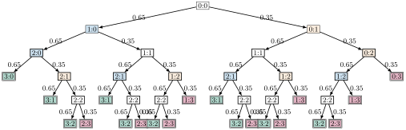

Aufgabe 7.2
In einem Tennismatch habe Spieler A gegen Spieler B eine konstante Erfolgsquote von 65% für einen Satzgewinn. Mit welcher Wahrscheinlichkeit gewinnt A den Match, wenn auf drei gewonnene Sätze gespielt wird?
- A gewinnt den Match, wenn er als erster 3 Sätze gewinnt
- Unterscheiden Sie die Fälle: Match endet nach 3, 4 oder 5 Sätzen
- Bei 4 Sätzen muss A in den ersten 3 Sätzen genau 2 gewinnen
- Nutzen Sie systematisches Zählen für die Anzahl der Möglichkeiten
| Gegeben | Gesucht |
| Spieler A: Erfolgsquote 65% pro Satz | Wahrscheinlichkeit |
| Spieler B: Erfolgsquote 35% pro Satz | für Matchgewinn von A |
| Match auf 3 gewonnene Sätze («Best of 5») | |
| $p = 0.65$, $q = 0.35$ | $P(\text{A gewinnt den Match})$ |
Einschätzung vorab: Da A der bessere Spieler ist (65% > 50%), wird seine Chance auf den Matchgewinn höher als 65% sein. Je länger das Match-Format, desto mehr setzt sich der bessere Spieler durch.
Vollständiger Wahrscheinlichkeitsbaum:

Fallunterscheidung mit Berechnungen:
Detaillierte Berechnungen:
Fall 1: Match endet 3:0
- A gewinnt alle drei Sätze direkt: (A,A,A)
- Wahrscheinlichkeit: $P(3:0) = 0.65 \cdot 0.65 \cdot 0.65 = 0.65^3 = 0.274625$
Fall 2: Match endet 3:1
- A gewinnt den 4. Satz (mit Wahrscheinlichkeit 0.65)
- In den ersten 3 Sätzen hat A genau 2 gewonnen
- Mögliche Verläufe: (AAB)A, (ABA)A, (BAA)A → 3 Möglichkeiten
- Wahrscheinlichkeit für einen Verlauf: $0.65^2 \cdot 0.35 \cdot 0.65 = 0.65^3 \cdot 0.35$
- Gesamtwahrscheinlichkeit: $P(3:1) = 3 \cdot 0.65^3 \cdot 0.35 = 0.288356$
Fall 3: Match endet 3:2
- A gewinnt den 5. Satz (mit Wahrscheinlichkeit 0.65)
- In den ersten 4 Sätzen hat A genau 2 gewonnen
- Anzahl der Möglichkeiten: 6 verschiedene Anordnungen
- Wahrscheinlichkeit: $P(3:2) = 6 \cdot 0.65^2 \cdot 0.35^2 \cdot 0.65 = 6 \cdot 0.65^3 \cdot 0.35^2 = 0.201850$
Gesamtwahrscheinlichkeit für Matchgewinn:
Interpretation:
Im Video: Etappe 2 · Bernoulliketten bei 5:01